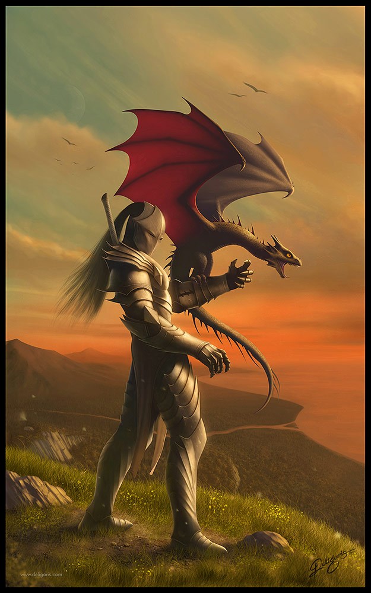
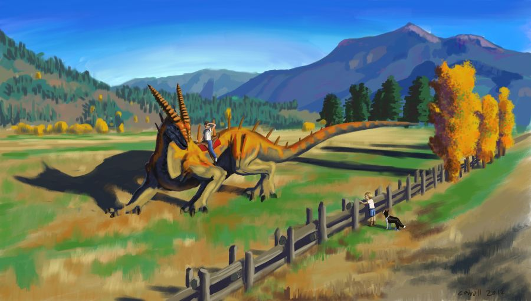
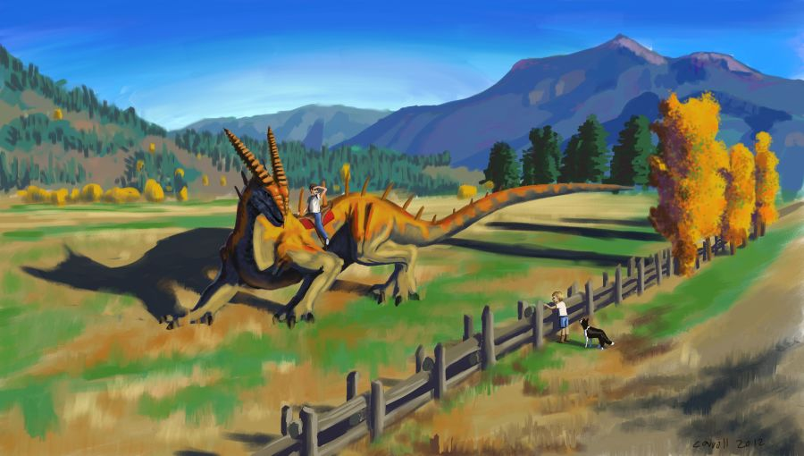

Dragon Taming
Dragons are wild and unpredictable by nature, but as scholars have found out, some dragon species are more mellow than others. If you want to tame a dragon of your own, you need to follow these instructions and always be cautious, because no matter your intentions, dragons can very easily kill you, even hatchlings, should you choose to try and raise one.
Steps to choosing the right dragon
The first thing you need to learn is what species and breeds of dragons are possible to be tamed. Please consult the page on the basic species of dragons as well as their habits and behaviors before making a choice, as this can be a life or death decision.
Once you have chosen your species, the next step is to find the right dragon for you. This part requires thought and careful planning, as you don't want to frighten the dragon or provoke it into attacking you. You should always carry a pack of medical supplies, food, and water when making your journey, and as weird as it sounds, no weapons as to assure the dragon you are no threat
When approaching the dragon, make sure that it knows you are coming far before it is in sight. It has far better hearing than you, so be sure to make plenty of noise. Despite what you may think that it will run away, dragons are more often curious than aggressive at first contacts.
This is where you must be brave and show no fear, for if you are hesitant for even a second, the dragon will not waste any time in either fleeing or killing or seriously injuring you. Start by showing you having nothing in your hands as you slowly move towards the dragon. You will feel it watch your every movement, so be sure not to make any sudden or hasty movements that may spook or scare the dragon or otherwise make it attack you
The next step is to become smaller than the dragon, though this is unnecessary as most dragons will be bigger than you, it is a sign of submission and nonaggression to assure the dragon you will not hurt it. Either kneel down or lower your head, making sure both your arms are in clear sight of the dragon. If it is interested, it will approach and begin investigating you closely. This is the most dangerous moment, so make sure to stay still and let it observe you
Should it choose to not deem you a threat, it will snort and gently rub your forehead (though this differs for different dragons, the meaning is generally the same), signaling you can stand up, but this does not mean you have instant control over it, you have to earn it by showing the dragon it can trust you.
Bonding with your dragon
By now you have completed the basic steps to choosing your dragon and earning its trust. Now you must maintain that respect and reciprocate it. The easiest way to do that would be to offer it food, either a fresh kill or assist it in searching for food. Despite the fact that dragons are much better hunters than humans, the gesture will not go unnoticed
In order for the dragon to accept you and allow you to touch it, you must first understand its body language, learn how to act around it while building that trust. Since this is not widely talked about, it can be really dangerous, so you must exercise caution, yet know when to back away and give your dragon some space. Over time as your bond grows, the dragon should become more comfortable in your presence and might let you touch it. Consider this a privilege, and whatever you do, don't abuse it or you might find yourself in front of a pissed off dragon.
Should you so wish to ride a dragon, it will take much longer, as dragon's believe this to be demeaning of them. To earn the ability to ride on the back of a dragon means your bond is very strong and the dragon trusts you. You should continue to care for your dragon in any way you can, but know they can leave whenever they want. Should your trust be high enough, you must believe the dragon will return eventually, and if it does, then it means the dragon has decided it likes you
From here on, the way to gain trust between you and your dragon will depend on what you do and how you act, and always remember that it does not have to listen to you; dragons are wild and can go anywhere they want to
Once you have obtained a dragon and earned it's trust, you can never let your guard down when around them, as they are unpredictable
 
